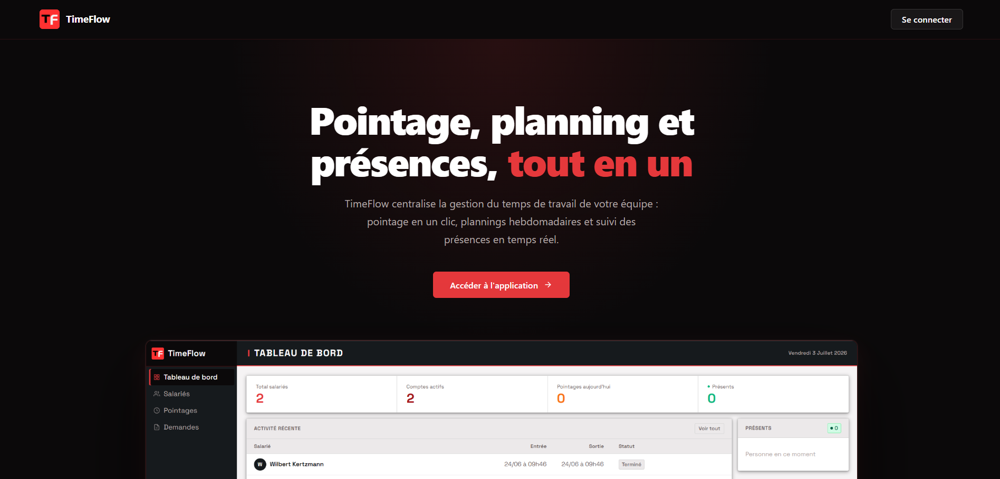

- Permettre aux salariés de pointer leurs entrées et sorties simplement
- Donner à l'administrateur une vue en temps réel des présences
- Gérer les plannings, les heures supplémentaires et les demandes de modification au même endroit
- Livrer une application fiable, testée et facile à déployer
Alternance au cabinet d'avocat Caroline Arnoux, 2025–2026
TimeFlow
Une application web de pointage et de planning pour les salariés d'une PME.
- Catégorie
- Application web full-stack
- Technologies
- Liens
- GitHub

À propos du projet
TimeFlow est une application web de pointage développée pendant mon alternance au cabinet d'avocat Caroline Arnoux. Les salariés y pointent leurs entrées et sorties, et l'administrateur suit les présences en temps réel.
Elle gère aussi les plannings : l'administrateur construit l'emploi du temps de chaque salarié dans un calendrier, peut copier une semaine entière et fixer des règles comme le nombre d'heures hebdomadaires ou la durée maximale de travail sans pause. Les salariés consultent leur planning, déclarent leurs heures supplémentaires avec un motif et demandent des modifications de créneau, que l'administrateur accepte ou refuse.
Chaque rôle a son propre espace : un tableau de bord avec les statistiques du jour pour l'administrateur, qui gère aussi les comptes salariés, et un espace personnel pour chaque salarié avec son historique de pointages.
Objectifs
Défis rencontrés
Le planning a été la partie la plus complexe : il faut gérer les créneaux de travail et de pause, les règles propres à chaque salarié et le circuit de validation des demandes de modification, en gardant des données cohérentes.
Pour garantir la qualité du code, j'ai mis en place une intégration continue avec GitHub Actions : lint, vérification du formatage, tests unitaires avec Vitest, tests de bout en bout avec Playwright sur une vraie base PostgreSQL, et build du front.
Stack technique
Back-end
Node.js, Express, vues EJS, sessions et bcrypt
Données
PostgreSQL avec l'ORM Prisma
Front-end
Calendriers interactifs en Svelte, compilés avec Vite
Qualité et déploiement
Docker, GitHub Actions, Vitest, Playwright, ESLint, Prettier
Résultats et apprentissages
TimeFlow m'a fait travailler sur toute la chaîne d'une application métier : modélisation de la base de données, authentification et gestion des rôles, interface, tests automatisés et déploiement avec Docker. C'est aussi le projet où j'ai le plus appris à structurer un code pour qu'il reste maintenable.